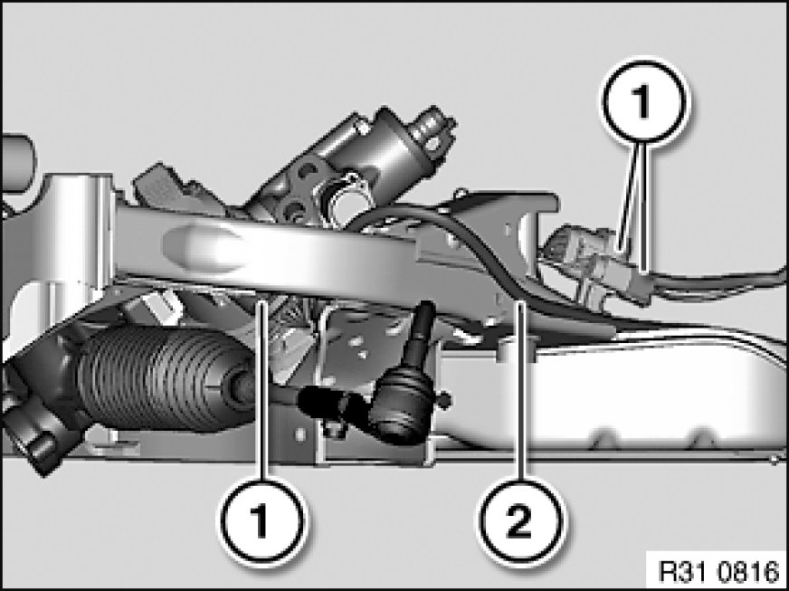
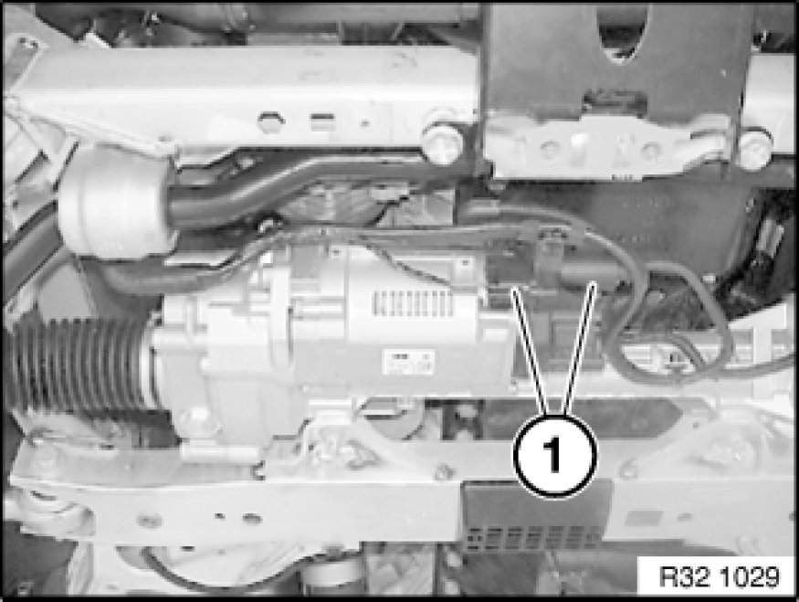

31 10 000 Removing and Installing Complete Front Axle (With Spring Struts)
31 10 000 - Removing and installing complete front axle (with spring struts)

Important!
Before removing front axle carrier:
In order to avoid damage to lifting platform, perform weight compensation on vehicle.
Load spring strut domes with sand bags.

Warning!
Danger to life!
Secure engine in installation position with special tool Securing Engine In Installation Position to prevent it from falling down.
Danger of poisoning 00 .. ... Danger of Poisoning If Oil Is Ingested/Absorbed Through the Skin if oil is ingested/absorbed through the skin!
Risk of injury 00 .. ... Risk of Injury If Oil Comes Into Contact With Eyes and Skin if oil comes into contact with eyes and skin!
Important!
Adhere to the utmost cleanliness. Do not allow any dirt to enter the hydraulic system.
Close off pipe connections with plugs.

Recycling:
Catch and dispose of hydraulic fluid in a suitable container.
Observe country-specific waste-disposal regulations

Necessary preliminary tasks:
- Secure engine in installation position Securing Engine In Installation Position
- Clamp off battery negative lead 61 20 900 Disconnecting and Connecting Battery Negative Lead
- Remove both brake calipers from swivel bearing and tie up
- Remove front assembly underside protection Removing and Installing/Replacing Front Underbody Protection
- If necessary, remove radiator seal
- If necessary, remove steering gear cover on left and right
- E88: Remove V-strut on left and right
- E88: Remove diagonal struts from mounting fixture
- Remove lower section of steering spindle from steering gear 32 31 070 Removing and Installing/Replacing Steering Spindle Lower Section
- If necessary, disconnect plug connection from ride-height sensor
- If necessary, disconnect vacuum line from electric changeover valve to engine mounts at T-piece
- Disconnect both plug connections for pulse generators and expose lines up to holder on spring strut
- Detach plug connection for brake pad sensor and expose lines up to holder on spring strut
Version with power steering:
- Draw off and dispose of hydraulic fluid from fluid reservoir
- Disconnect pressure line from vane pump
- Detach return line from power steering cooler 32 41 ... Notes on Hydraulic Line With Quick-Connect Coupling and expose line up to connection on power steering gear

Version with active steering:
Disconnect plug connections (1) and unclip connecting line (2) from front axle carrier.

Version with Electric Power Steering (EPS):
Disconnect plug connections (1) and expose wiring harness up to engine carrier.
Installation Note:
Plug connections must audibly snap into place.
Make sure wiring harness is correctly laid.
Important!
Guide spring struts with your hand when lowering and raising in order to avoid damaging the wheel arches.
After lowering, the spring struts must be aligned to the front axle carrier and secured in such a way that the ball joints of the control arms, tension struts and tie rod ends are not damaged.
Remove both spring struts from spring strut dome 31 31 000 Removing and Installing Complete Left or Right Spring Strut Shock Absorber.
Lower front axle support.
After installation:
- Fill and bleed hydraulic system Service and Repair
- Check pipe connections for leaks
- Carry out wheel alignment check if a spring strut with support bearing was or has been installed without centering pin.
- Carry out steering angle sensor adjustment/adjustment for active front steering